Modeling the Collective Behavior of Hepatocytes in Clearing Toxins
Shahab Sheikh-Bahaei1
and C. Anthony Hunt 1,2
1 The UCSF/UCB Joint Graduate Group in Bioengineering,
2 The Department of Biopharmaceutical Sciences, BioSystems Group,
I. Methods
|
A |
B |
|
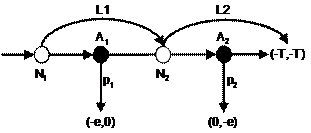 |
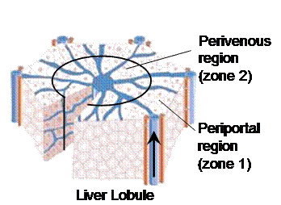 |
Figure 1. The schematic of the simple game (A) and its mapping to the liver (B).
Legend:
Description of the game:
1. Nature forces at N1 pass the compound to N2 with probability L1; or alternatively, pass it to player 1 with probability 1-L1.
2. Player 1 either eliminates the compound with probability P1 and pays the elimination cost (e), or takes the risk and pass the compound to N2 with probability 1-P1.
3. Nature forces at N2 pass the compound to the terminal node with probability L2, in which case both players have to pay the toxicity cost T. Conversely, the forces might pass the compound to player 2, with probability 1-L2.
4. Player 2 either eliminates the compound with probability P2 and pays the elimination cost (e), or takes the risk and passes the compound to the terminal node and makes both players pay the toxicity cost T.
Mappings to the liver:
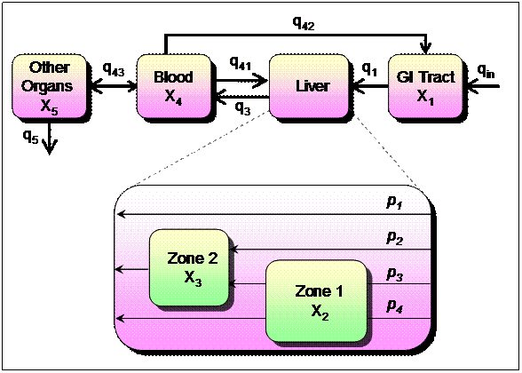
Figure 2. A physiologically-based model to analyze the effects of hepatic zonation on toxicity exposure to the whole body.
Legend:
Description of the model:
The model uses a traditional physiologically-based PKPD approach. Liver is assumed to have 2 zones: periportal (zone 1) and pervenous (zone 2). Compounds in the liver are assumed to stochastically take one of the four paths with probability pi:
There is one set of differential equations for each path. At each time step, one of the four sets is chosen according to the probability associated with the corresponding path. In this model, Zone 1 and Zone 2 eliminate compounds independent of each other. We assume that the mechanisms of xenobiotic elimination in the liver (including uptake transport, biliary efflux and metabolism) follow saturable Michaelis-Menten kinetics. Intrinsic clearance of each zone is assumed to be CLi = Vmax,i/Km, where Vmax is maximum elimination (metabolic + transport) rate and Km Michaelis-Menten constant. Vmax is assumed to be affected by the level of metabolic enzymes and transporters expressed by cells. As a result each zone has its own Vmax. The two zones are assumed to have equal Km values.
Further, we assume that the cost to the organism, J, is proportional to (CL1) 2 + (CL2) 2 + (cAUBC)2, where CL1 and CL2 are intrinsic periportal clearance and intrinsic perivenous clearance, respectively; AUBC is the area under the xenobiotic-concentration-in-the-blood curve and c adjusts the relative cost contribution of a fixed dose based on xenobiotic toxicity.
Table 1. Equations of the model for each of the four path shown in Figure 2.
|
Path 1: 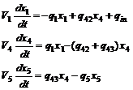 |
Path 2: 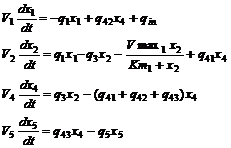 |
(Equation set 1) |
|
Path 3: 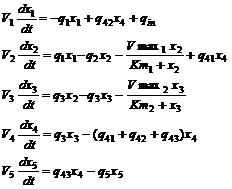 |
Path 4:
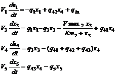 |
Figure 3. n-player expansion of the simple game presented in Figure 1.
Legend:
Description of the game:
Mappings to the liver:
II. Results
A B
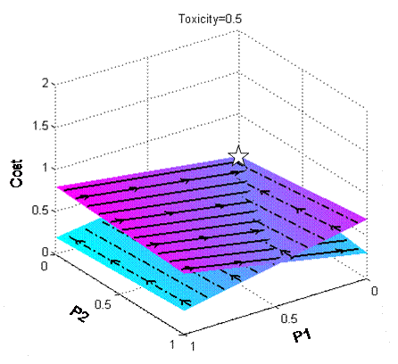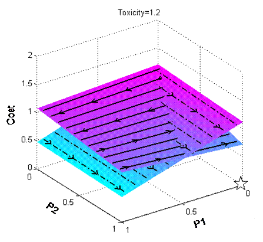
C
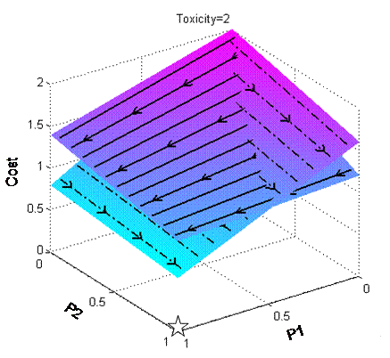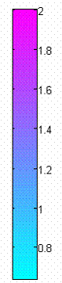
Figure 4. Effects of toxicity change in the 2-player game.
Legend:
Surface with solid marker lines: cost surface of player 1
Surface with dashed marker lines: cost surface of player 2
Lighter green corresponds to lower costs; purple corresponds to higher costs, as shown by the color-bar.
Arrows on the surfaces: players’ preferred moving direction in order to lower their costs
Star: the equilibrium of the corresponding game
Description:
Players’ cost functions and accordingly the equilibrium of the game are highly influenced by the toxicity level. Three examples of cost functions are shown. The equilibrium of each game is shown by a small white star. The arrows are the directions towards which players are inclined to move in their strategy space to reduce costs. The direction of arrows eventually takes them to the equilibrium from any given point in the strategy space.
(A) When toxicity is low (0.5), the equilibrium of the game is at (p1=0, p2=0). The cost surface of player 1 is steeper than that of player 2. As a result, player 2’s contribution is less costly.
(B) When toxicity is higher than the energy cost (1.2 > 1), the equilibrium of the game moves to (p1=0, p2=1), which means player 1 makes none while player 2 makes maximum clearance effort.
(C) Another change of equilibrium happens when toxicity is high enough (in this particular example, at least %64 higher than energy cost). In this case, both players make maximum effort to clear the toxins (p1=1, p2=1). Calculations of cost surfaces are presented in Appendix B.
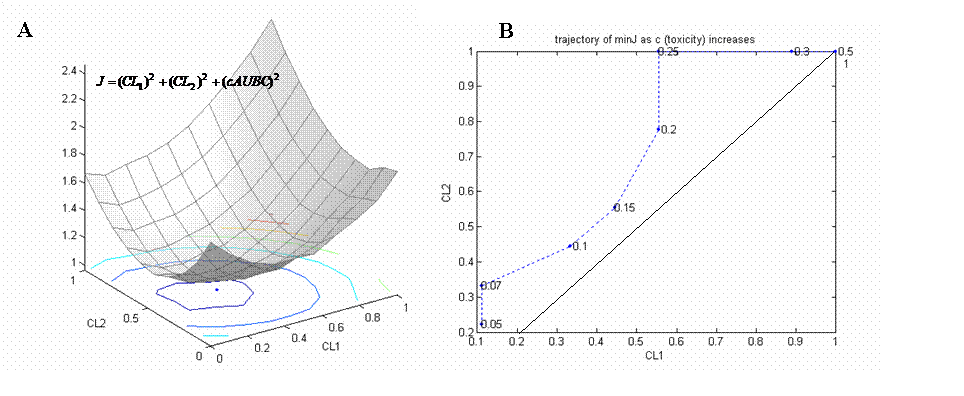
Figure 5. Effects of toxicity change in the physiologically-based model.
Legend: A:
3D surface: plot of cost function, J, versus CL1 and CL2, when c=0.1. (CL1, Cl2, c and J are defined in Figure 2 legend). The units of the two intrinsic clearances are mL/h.
2D curves: contours of the cost function. Blue colors correspond to lower costs. Red colors correspond to higher costs.
B:
Dotted curve: trajectory of Jmin as c changes from 0.05 to 0.5. For each point on the trajectory the value of corresponding c is reported.
Solid line: the unity line
Description:
(A): Typical surface of the cost function (J) versus intrinsic periportal clearance (CL1) and intrinsic perivenous clearance (CL2) when c=0.1. If CL1 and CL2 are both small, the energy cost is low; but the toxicity cost is high since the compound is not cleared fast enough. On the other hand, high values of CL1 and CL2 reduce toxicity cost but increase energy consumption. Consequently, for a given c, there exists an optimal pair of CL1 and CL2 at which J is at its minimum (Jmin).
(B): The trajectory of optimal J (Jmin) as c (toxicity) increases. The values of c are shown on the trajectory. The solid line is the unity line. Note that the trajectory is above the unity line which means CL2,optimal>=CL1,optimal. It demonstrates that in order to minimize the exposure of toxic compounds to the body, it’s less expensive if zone 2 makes more clearance effort than zone 1.
|
Clearance effort |
A-- Toxicity=1.0 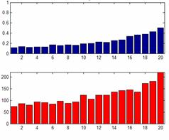 |
B -- -- Toxicity=2.0 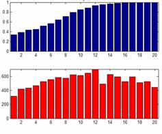 |
|
Toxicity Processed |
||
|
Clearance effort |
C -- Toxicity=3.0 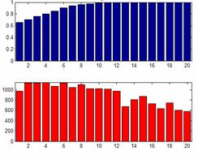 upstream downstream |
D -- Toxicity=5.0 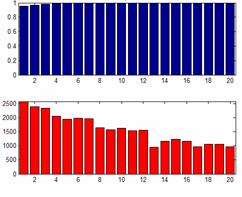 upstream downstream |
|
Toxicity Processed |
||
|
|
Distance to periportal region |
Distance to periportal region |
Figure 6. Effects of toxicity change in the n-player game.
Legend:
Description:
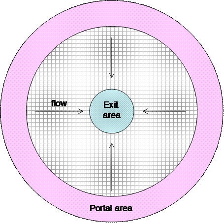
Figure 7A. 2D expansion of the n-player game. Players are organized in a circular 2D shape similar to a liver lobule. At each step of the game, particles are placed in the portal area (shown in pink). They stochastically and simultaneously move towards the central region according the flow shown. Each agent on the grid plays one of the two actions (ignore or process) upon encountering a particle (similar to the game shown in Figure 3). Agents use Q-learning algorithm to minimize their long-term average cost. Particles that reach the exit area (light blue area) are removed. All players are penalized for exited particles according to their assigned toxicity.
|
toxicity : 25 |
10 |
5 |
|
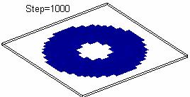 |
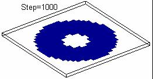 |
|
|
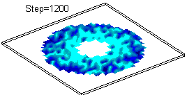 |
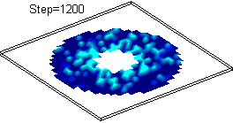 |
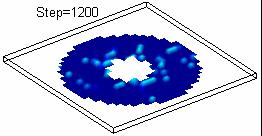 |
|
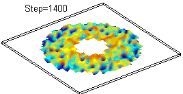 |
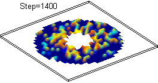 |
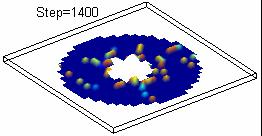 |
|
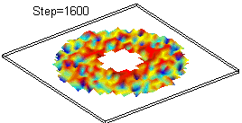 |
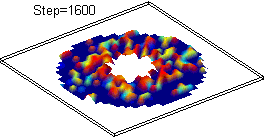 |
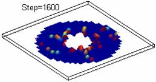 |
|
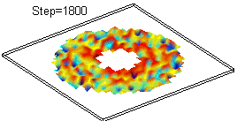 |
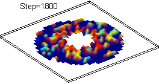 |
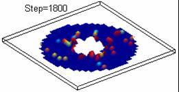 |
|
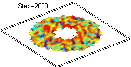 |
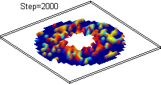 |
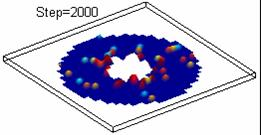 |
Figure 7B. Effects of toxicity change on 2D gradients of clearance strategies (P’s).
Legend:
Description:
Figure compares the emergence of 2D distribution of clearance strategies for the 3 different toxicity levels. In all three conditions, downstream agents make more clearance effort than upstream agents. Upstream agents make more contribution for higher toxicity levels. Other important parameters are as follows: L=0.8, T=0.01, dose=100, space_size=31x31.
Video 1. Shows how the players respond and
self-organize their strategies when toxicity is changed.
Video 2. Shows how the players respond and
self-organize their strategies when other agents die due to toxicity. Green bars show the amount of toxicity processed by the corresponding agent. Black solid curve shows the average strategies of the agents (+/- standard deviation). (A) Toxicity level is low: downstream players die first. Upstream players increase their clearance effort to compensate. (B) Toxicity level is moderate: mid-zonal players die first. (C) Toxicity level is high: upstream players die first.
| A |
B |
C |
III. Validation
Table 2. LD50 and zone activity of toxic compounds found in the literature. pp: periportal, pv: perivenous The table summarizes the LD50 and zone activity of compounds found in the literature. We intended to report all such data found in the literature, however LD50 values are not available for all compounds, due to ethical implications of measuring LD50. Although the zone activity data are from different papers and may not be directly comparable, they provide initial support for our hypothesized model: highly toxic compounds affect periportal region, while low toxic compounds affect perivenous region, and compounds with medium toxicity affect middle regions of the liver. It is consistent with the model presented in this work (see figures 6 and 7).
|
Chemical Name |
LD50 Rat Oral (mg/kg) {{23 Anonymous 2008}} |
Zone Avtivity |
Reference |
|
DIOXIN (TCDD) |
0.034 |
pp |
{{22 Birnbaum,L S. 1999}} |
|
CYCLOCHLOROTINE |
2-3 |
pp |
“Animals treated with CC developed degeneration and necrosis of the hepatocytes almost exclusively in the periportal region of the liver lobule.” {{24 Tatsuno,T. 1984}} |
|
PHOSPHORUS |
3.03(f), 3.76(m) |
pp |
“…phosphorus damage periportal tissue.” {{33 Thurman,R G. 1984}} |
|
Gossypol |
5 |
pp |
“Gossypol selectively damages the periportal region of lobules in perfused rat liver” {{25 Lin,Y C. 1991}} |
|
Tacrine |
23-28 (mice) |
pv & mid-zonal |
“necrosis was detected in midzonal and pericentral regions of the liver lobule accompanied by fatty changes.” {{26 Thurman,R G. 1997}} |
|
METHYLHYDRAZINE |
33 |
pp |
“Hepatic and renal lesions consisted of periportal intracanalicular cholestasis but no hepatic and renal tubular hemosiderosis.” {{23 Anonymous 2008}} |
|
ALLYL ALCOHOL |
64 |
pp |
{{21 Katz,N. 1989}} |
|
COUMARIN |
293 |
mid-zonal & pp |
“In rats pretreated with saline, corn oil or PB, coumarin produced centrilobular hepatic necrosis, whereas in rats pretreated with 20 MC or AR0, coumarin produced periportal hepatic necrosis”{{29 Evans,J G. 1993}} |
|
FERROUS SULFATE |
319 |
pp |
“Acute Exposure/ Experiments .../have/ shown that large doses of ferrous sulfate produce severe liver damage ...At post mortem in naturally occurring cases only organ consistently affected is liver, characteristic finding being periportal necrosis” {{23 Anonymous 2008}} |
|
MIREX |
306 |
pp |
“Lipid accumulations occurred & appeared in
distinctive periportal zonation pattern” {{27
|
|
ISONIAZID |
650 |
pv |
“the extent of cell death was higher in perivenous cells than in periportal cells” {{28 Lindros,K O. 1992}} |
|
1,1-DICHLOROETHYLENE |
850 |
pp |
“Statistically significant treatment related differences were limited to the liver in which an increase in hepatic lesions was observed ... which usually had a minimal amount of hepatocellular fatty change and periportal hepatocellular hypertrophy” {{23 Anonymous 2008}} |
|
ACETAMINOPHEN |
1000 |
pv |
“…histologic examination of liver tissues 24 hours after treatment with 120 mg/kg APAP showed areas of perivenous hemorrhage and necrosis in APAPtreated IL-10 KO mice” {{30 Pohl,Lance R. 2002}} |
|
DIALLYL PHTHALATE |
1700 |
pp |
“…diallyl phthalate is metabolized to allyl alcohol, a potent periportal hepatotoxicant…” {{31 Sipes,I G. 1986}} |
|
CCl4 |
2860 |
pv |
{{21 Katz,N. 1989}} |
|
Most drugs |
>5000 |
pv |
|
(image removed due to copyright restrictions)
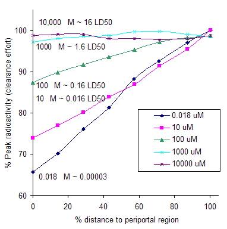
Figure 8. In vivo effects of toxicity change on perfused rat liver, example 1.
The figure shows the dose-dependent zonal distribution of Cysteine uptake in a perfused rat liver. X axis is the percent distance to periportal region. Y axis is percent peak radioactivity measured from autographs taken 30s after administration of tracer [35S]Cysteine in a perfused rat liver (6). As concentration of Cysteine increases, it becomes more toxic (LD50=1890mg/kg), and as a result the clearance strategies of hepatocytes change: The hepatocytes close to the periportal region do not make as much clearance effort as those closer to the perivenous region, unless there is a high toxicity threat. This behavior is consistent with the behavior of agents in the proposed game trying to simultaneously minimize their energy and toxicity costs (thus improving their own fitness as well as the whole organism fitness). The data is taken from {{11 Kaplowitz,N. 1992}}.
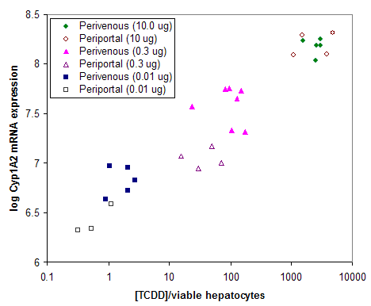
Figure 9. In vivo effects of toxicity change on rat liver, example 2.
Dose dependent localization of TCDD (LD50=0.034 mg/kg) and effect of CYP1A2 mRNA expression in perivenous and periportal hepatocytes obtained from rats treated with 0.01, 0.3 and 10.0 ug TCDD/kg. X-axis is the concentration of [3H]TCDD in each liver-cell population expresses as attograms (ag) [3H]TCDD/viable hepatocyte.
The data is consistent with the model: at low toxicity values perivenous hepatocytes express more CYP1A2 than periportal hepatocytes. As toxicity increases both perivenous and periportal CYP1A2 expression increases. At the highest toxicity value (0.3LD50) periportal and perivenous hepatocytes express almost equal amounts of CYP1A2. Data from {{22 Birnbaum,L S. 1999}}.
References
1. Billiar,T R.; Vodovotz,Y.; Geller,D A.; Salyapongse,A N.; Liu,S.Hepatocyte toll-like receptor 2 expression in vivo and in vitro: role of cytokines in induction of rat TLR2 gene expression by lipopolysaccharide.Shock, 2000, 14, 3, 361-5, BioMedical Press, Augusta, Ga.
2. Matzinger,The Danger Model: A Renewed Sense of SelfScience, 2002, 296, 5566, 301, American Association for the Advancement of Scienc
3. Lucier,G W.; Clark,G C.; McCoy,Z.; Portier,C J.; Goldstein,J A.; Tritscher,A M.Dose-response relationships for chronic exposure to 2,3,7,8-tetrachlorodibenzo-p-dioxin in a rat tumor promotion model: quantification and immunolocalization of CYP1A1 and CYP1A2 in the liver.Cancer research, 1992, 52, 12, 3436-42, Waverly Press, Baltimore, Md.
4. Tomita,Masaru; Nakajima,Hiromu; Naito,Yasuhiro; Ohno,HiroshiConstruction of a biological tissue model based on a single-cell model: a computer simulation of metabolic heterogeneity in the liver lobule.Artificial life, 2008, 14, 1, 3-28, MIT Press, Cambridge, MA
5. Zacharewski,Timothy R.; Jump,Donald B.; Harkema,Jack R.; Chittim,Brock; Tashiro,Colleen; Burgoon,Lyle D.; Boverhof,Darrell R.Temporal and dose-dependent hepatic gene expression patterns in mice provide new insights into TCDD-Mediated hepatotoxicity.Toxicological Sciences, 2005, 85, 2, 1048-63, Academic Press, San Diego, CA
6. Jungermann,K.Zonation of metabolism and gene expression in liver.Histochemistry and Cell Biology, 1995, 103, 2, 81-91, Springer-Verlag, Heidelberg
7. Gebhardt,R.Metabolic zonation of the liver: regulation
and implications for liver function.Pharmacology therapeutics, 1992, 53, 3,
275-354, Pergamon,
8. Walsh,P J.; Mommsen,T P.Metabolic and enzymatic
heterogeneity in the liver of the ureogenic teleost Opsanus beta.The journal of
experimental biology, 1991, 156, 407-18, Published for the Company of
Biologists Ltd. by the Cambridge University Press,
9. Sawada,Yasufumi; Ohtani,Hisakazu; Tsujimoto,Masayuki; Kogetsu,Hirokuni; Kumagai,Yoichi; Nasu,RisaPhysiologically based pharmacokinetic model for pralmorelin hydrochloride in rats.Drug metabolism and disposition, 2005, 33, 10, 1488-94, American Society for Pharmacology and Experimental Therapeutics, etc.], [Bethesda, Md., etc.,
10. Lamers,W H.; Grange,T.; Moorman,A F.; Ruijter,J M.; Sassi,H.; Christoffels,V M.A mechanistic model for the development and maintenance of portocentral gradients in gene expression in the liver.Hepatology, 1999, 29, 4, 1180-92, No longer published by Elsevier, Philadelphia , PA
11. Kaplowitz,N.; Ookhtens,M.; Yamamuro,W.; Wong,E.; Chan,E T.; Saiki,H.Zonal distribution of cysteine uptake in the perfused rat liver.The Journal of biological chemistry, 1992, 267, 1, 192-6, American Society for Biochemistry and Molecular Biology [etc.], [Baltimore, etc.]
12. Kietzmann,T.; Jungermann,K.Oxygen: modulator of
metabolic zonation and disease of the liver.Hepatology, 2000, 31, 2, 255-60, No
longer published by Elsevier,
13. Roze,D.; Michod,R E.Cooperation and conflict in the
evolution of multicellularity.Heredity, 2001, 86, Pt 1, 1-7, Oliver and Boyd,
14. Turchin,Peter; Burtsev,MikhailEvolution of cooperative strategies from first principles.Nature, 2006, 440, 7087, 1041-4
15. Axelrod, Robert; Axelrod,David E.; Pienta, Kenneth J.Evolution of cooperation among tumor cellsProceedings of the National Academy of Sciences of the United States of America, 2006, 103, 36, 13474, National Academy of Sciences
16. Fardel,Olivier; Lagadic-Gossmann,Dominique; Guillouzo,André; Payen,Léa; Huc,Laurence; Loewert,Maud; Sparfel,LydieAcute cytotoxicity of the chemical carcinogen 2-acetylaminofluorene in cultured rat liver epithelial cells.Toxicology Letters, 2002, 129, 3, 245-54, Elsevier, Amsterdam,
17. Walum, ErikAcute oral toxicityEnvironmental health
perspectives, 1998, 106, Suppl 2, 497, National Institute of Environmental
Health Science, [
19. Watkins,Technical Note: Q-LearningMachine learning, 1992, 8, 3/4, 279, Kluwer Academic Publishers, Boston/U.S.A.
20. Vincent,Evolutionary Game Theory, Natural Selection, and
Darwinian Dynamics2005,
21. Katz,N.; Jungermann,K.Functional specialization of different hepatocyte populations.Physiological reviews, 1989, 69, 3, 708-64, American Physiological Society
22. Birnbaum,L S.; Alcasey,S K.; Lucier,G W.; Lindros,K O.; Blanton,J.; Walker,N J.; Richardson,V M.; Santostefano,M J.Dose-dependent localization of TCDD in isolated centrilobular and periportal hepatocytes.Toxicological Sciences, 1999, 52, 1, 9-19, Academic Press, San Diego, CA
23. HSDB Hazardous Substances Data Bank2008, 2008, TOXNET United States National Library of Medicine, http://toxnet.nlm.nih.gov/
24. Tatsuno,T.; Ito,E.; Terao,K.Liver injuries induced by cyclochlorotine isolated from Penicillium islandicum.Archives of toxicology, 1984, 55, 1, 39-46, Springer-Verlag, Berlin
25. Lin,Y C.; Nuber,D C.; Manabe,S.Zone-specific hepatotoxicity of gossypol in perfused rat liver.Toxicon, 1991, 29, 6, 787-90, Pergamon, Amsterdam,
26. Thurman,R G.; Mason,R P.; Connor,H D.; Raleigh,J A.; Arteel,G E.; Stachlewitz,R F.Development and characterization of a new model of tacrine-induced hepatotoxicity: role of the sympathetic nervous system and hypoxia-reoxygenation.The Journal of pharmacology and experimental therapeutics, 1997, 282, 3, 1591-9, American Society for Pharmacology and Experimental Therapeutics, [Bethesda, Md.]
27. Kendall,M W.Light and electron microscopic observations of the acute sublethal hepatotoxic effects of Mirex in the rat.Archives of environmental contamination and toxicology, 1979, 8, 1, 25-41, Springer, New York
28. Lindros,K O.; Anundi,I.Evidence for cytochrome P450 2E1-mediated toxicity of N-nitrosodimethylamine in cultured perivenous hepatocytes from ethanol treated rats.Pharmacology toxicology, 1992, 70, 6 Pt 1, 453-8, Munksgaard International Publishers], [Copenhagen
29. Evans,J G.; Lake,B G.Effect of pretreatment with some mixed-function oxidase enzyme inducers on the acute hepatotoxicity of coumarin in the rat.Food and Chemical Toxicology, 1993, 31, 12, 963-70, Pergamon, Oxford
30. Pohl,Lance R.; Shah,Anjali G.; George,John W.; Martin,Jackie L.; Amouzadeh,Hamid R.; Reilly,Timothy P.; Masubuchi,Yasuhiro; Bourdi,MohammedProtection against acetaminophen-induced liver injury and lethality by interleukin 10: role of inducible nitric oxide synthase.Hepatology, 2002, 35, 2, 289-98, No longer published by Elsevier, Philadelphia, PA
31. Sipes,I G.; Schram,K H.; Carter,D E.; Eigenberg,D A.Examination of the differential hepatotoxicity of diallyl phthalate in rats and mice.Toxicology and Applied Pharmacology, 1986, 86, 1, 12-21, Academic Press, San Diego [etc.]
33. Thurman,R G.; Kauffman,F C.; Matsumura,T.; Belinsky,S A.Rates of allyl alcohol metabolism in periportal and pericentral regions of the liver lobule.Molecular pharmacology, 1984, 25, 1, 158-64, American Society for Pharmacology and Experimental Therapeutics, [Bethesda, Md.]
35. El Samad, Hana; Khammash, M.; Homescu, Chris; Petzold,
LindaOptimal Performance of the Heat-Shock Gene Regulatory NetworkIFAC World
Congress, 2005, 16,
Appendix
Table A1. Physiological parameters of tissues in a 250-g rat {{9 Sawada,Yasufumi 2005}}.
|
Tissue |
Volume (ml) |
Flow rate (ml/min) |
|
G.I.Tract |
13.1 |
Qgi = 9.8 |
|
Liver |
10.3 |
QL = 11.8 |
|
Blood vessels |
16.9 |
QB = 43 |
|
Other |
176.9 |
n/a |
Table A2. Rate constant values.
|
Parameter |
Value |
|
q1 |
9.8 |
|
q3 |
11.8 |
|
q41 |
2.0 |
|
q42 |
9.8 |
|
q43 |
1 |
|
q5 |
0.5 |
|
qin |
0 |